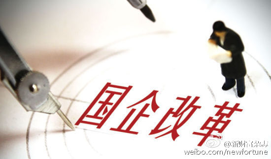

这个消息值得关注。中国会继续走集权化的路子，而不是相反方向。历史规律也说明，中国政府越有钱，集权化封闭的趋势越明显。@新财富杂志:【终于定了，中央深改组会议发出重磅信号！】@刘杉：国有企业如何深化改革，一直是舆论关注焦点，但如何改，众说纷纭，难有定论。6月5日召开的中央全面深化改革领导小组第十三次会议，给国有企业改革重新制定了路线图，这个顶层设计的核心就是党要管国企。终于定了，中央深改组会议发出重磅信号！ 
前几天创业园的同事问我怎么看订阅纸媒，我说纸媒完蛋了，我不会再定。即使纸媒有电子版，国内的纸媒都是一些20多岁的小年轻在码字，有些基础常识都不懂，经常出些可笑的新闻和报道，不值得阅读。现在新媒体平台这么发达，关注个人观点比关注机构观点，会受益得多。
也只有我父亲那代人还喜欢拿电视上如何说，报纸上如何说来佐证他的观点。但凡没有个人署名，只是通称某专家的观点，都不用太在意，不是鸡汤，就是谣言。@Ada李力:前几天创业园的同事问我怎么看订阅纸媒，我说纸媒完蛋了，我不会再定。即使纸媒有电子版，国内的纸媒都是一些20多岁的小年轻在码字，有些基础常识都不懂，经常出些可笑的新闻和报道，不值得阅读。现在新媒体平台这么发达，关注个人观点比关注机构观点，会受益得多。
我曾经跟我父亲一样，热衷于从网络收集各类信息，而且给予媒体机构很高的信任度。直接受害的结果就是错失十年的房产牛市。你要追求财富，应该关注是富人的观点和做法，而不是diaosi的看法。媒体的绝大部份编辑就是diaosi。@Ada李力:前几天创业园的同事问我怎么看订阅纸媒，我说纸媒完蛋了，我不会再定。即使纸媒有电子版，国内的纸媒都是一些20多岁的小年轻在码字，有些基础常识都不懂，经常出些可笑的新闻和报道，不值得阅读。现在新媒体平台这么发达，关注个人观点比关注机构观点，会受益得多。
时代变化这么快，喜欢倚老卖老往往会更快地被淘汰。对00后的想法和看法，我还是要以很尊重的态度去倾听。@Ada李力:#姣姣#做事的大多数顾虑都是同学怎么看她，老师怎么看她。遇到我和明俊与她同学观点相反的时候，她觉得同学说得对。我对她说“你同学十一二岁，妈妈上学和工作分别都有这么多年，你觉得谁说对的概率更大？”
男怕入错行，其实这句话适用于所有的职业选择。我很幸运地进入了IT行业，犹记得研究生毕业时学化学物理的同学找工作时的焦头烂额，觉得能拿到中学教师的聘书就不错了，而我当时几个高薪offer在手，还挑挑拣拣的。但我一点儿也不觉得自己比那些同学能力强，纯粹是当初专业选择的缘故。
方向对，胜过细节上的努力。即使工作十年后，IT行业的薪资也是传统行业的好几倍。我那些依旧在传统行业的同学朋友，工作和我一样的努力，但是从收入回报上来说，差很多。当然IT行业如果跟金融投行什么的相比，也成渣了。@Ada李力:男怕入错行，其实这句话适用于所有的职业选择。我很幸运地进入了IT行业，犹记得研究生毕业时学化学物理的同学找工作时的焦头烂额，觉得能拿到中学教师的聘书就不错了，而我当时几个高薪offer在手，还挑挑拣拣的。但我一点儿也不觉得自己比那些同学能力强，纯粹是当初专业选择的缘故。
回复@Ericlikemusic:专业是自己喜欢的就好。我是从经济回报角度谈专业选择的。//@Ericlikemusic:英语专业怎么办@Ada李力:男怕入错行，其实这句话适用于所有的职业选择。我很幸运地进入了IT行业，犹记得研究生毕业时学化学物理的同学找工作时的焦头烂额，觉得能拿到中学教师的聘书就不错了，而我当时几个高薪offer在手，还挑挑拣拣的。但我一点儿也不觉得自己比那些同学能力强，纯粹是当初专业选择的缘故。
又一次遇到姣姣顾虑“别人怎么说”时，我说：“大多数人都是普通人，如果你要过普通人的生活，可以听从大多数人的观点。如果不是，大部份人的看法，你根本不用在意”。当然，现在她未必听得懂，我说给自己听的。@Ada李力:#姣姣#做事的大多数顾虑都是同学怎么看她，老师怎么看她。遇到我和明俊与她同学观点相反的时候，她觉得同学说得对。我对她说“你同学十一二岁，妈妈上学和工作分别都有这么多年，你觉得谁说对的概率更大？”
回复@阿吉_Aydge:看到个说法：打击腐败，搞国企混改，是为了把权贵之前的灰色资产，通过资本市场洗白，阳光化。普通人还是算了吧，根本没机会参与这轮财富分配。//@阿吉_Aydge:深化改革就是私有化，国企高管分蛋糕@新财富杂志:【终于定了，中央深改组会议发出重磅信号！】@刘杉：国有企业如何深化改革，一直是舆论关注焦点，但如何改，众说纷纭，难有定论。6月5日召开的中央全面深化改革领导小组第十三次会议，给国有企业改革重新制定了路线图，这个顶层设计的核心就是党要管国企。终于定了，中央深改组会议发出重磅信号！
回复@countrybiatch:我对其它行业了解不多。你要是有兴趣转行，可以自己做个调研，薪资高的行业有哪些，以及你进哪个行业的胜算会高些。//@countrybiatch:请问ada从经济回报角度来谈，您认为现在哪个专业好？@Ada李力:男怕入错行，其实这句话适用于所有的职业选择。我很幸运地进入了IT行业，犹记得研究生毕业时学化学物理的同学找工作时的焦头烂额，觉得能拿到中学教师的聘书就不错了，而我当时几个高薪offer在手，还挑挑拣拣的。但我一点儿也不觉得自己比那些同学能力强，纯粹是当初专业选择的缘故。
今天Bella忽然问我她旁边的男友是否很男权。我说我定义的男权是只依据性别就认定某些规则，比如认为女性智商就是比男性差；女人不能强势，必须温柔；老婆要给老公留面子；老婆娶回家就是做饭养孩子伺候他伺候老人的…… 这基本是直男癌的特征，属于脑子坏掉的那种。Bella说，那就不是。
有时候男权思维容易和既得利益者思维混淆在一起。从人性上来说，既得利益者很少会主动放弃自己的实惠。举个简单例子来说，双职工家庭，夫妻双方收入相当，而女方还承担了养育照顾孩子的责任和绝大部份家务。这种情况下，女方还没有异议的情况下，作为既得利益者的男性自然很愿意维持这种局面。@Ada李力:今天Bella忽然问我她旁边的男友是否很男权。我说我定义的男权是只依据性别就认定某些规则，比如认为女性智商就是比男性差；女人不能强势，必须温柔；老婆要给老公留面子；老婆娶回家就是做饭养孩子伺候他伺候老人的…… 这基本是直男癌的特征，属于脑子坏掉的那种。Bella说，那就不是。
 终于定了，中央深改组会议发出重磅信号！
终于定了，中央深改组会议发出重磅信号！